Tudo num só lugar
Uma biblioteca única de jornadas, workflows, intenções e variáveis — pesquisável e filtrável por tipo de asset, em vez de depender de abrir arquivo por arquivo.
Case study
Painel interno pra gerenciar jornadas, workflows, intenções e variáveis das automações de WhatsApp da empresa — da busca de um asset específico até a publicação de uma nova versão seguindo um pipeline com aprovação e rollout controlado.
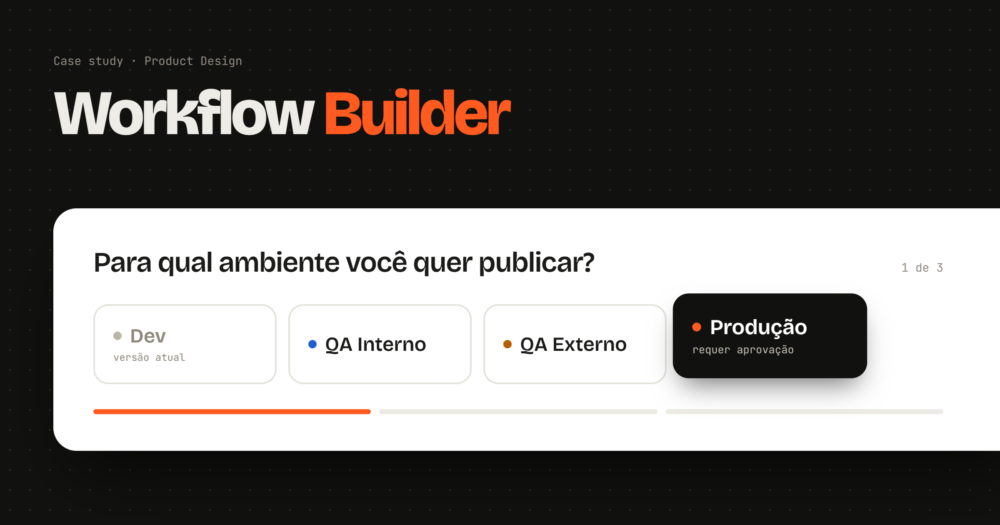
Arte de capa feita a partir da primeira etapa real do fluxo de publicação do Workflow Builder.
Uma biblioteca única de jornadas, workflows, intenções e variáveis — pesquisável e filtrável por tipo de asset, em vez de depender de abrir arquivo por arquivo.
Cada asset mostra em que ambiente está — Dev, QA Interno, QA Externo ou Produção — pra ninguém testar achando que já é a versão em produção, ou o contrário.
Um pipeline de três passos — destino, pendências e rollout — com aprovação obrigatória antes de qualquer mudança sensível ir pro ar.
Conforme o número de agentes e automações de WhatsApp da empresa crescia, ficou cada vez mais difícil saber rapidamente o que já existia, em qual ambiente cada coisa estava publicada e se era seguro alterar uma versão sem quebrar o que já estava em produção. O Workflow Builder nasceu como o painel central pra resolver exatamente isso.
Atuei no design desse painel interno junto com o time de produto e engenharia — da estrutura da biblioteca de assets até o fluxo de publicação, incluindo como comunicar bloqueio, alerta e necessidade de aprovação sem deixar a pessoa insegura na hora de publicar.
Cada etapa do pipeline é validada antes de ir pro ar. Clique em Publicar e veja o que acontece quando falta resolver uma pendência.
Quatro momentos comuns da rotina de quem mantém automações de WhatsApp no ar — e como o painel foi pensado pra cada um deles:
Em vez de vasculhar pastas, a pessoa busca pelo nome ou filtra por tipo de asset — e já vê em que ambiente cada versão está, sem precisar abrir nada.
O assistente de publicação separa bloqueios (precisam ser resolvidos) de alertas (avisam, mas não travam) antes de liberar o botão de continuar.
Pra QA Externo e Produção, a publicação fica condicionada à aprovação de uma pessoa autorizada — com um atalho pra chamá-la direto do próprio fluxo.
Rollout imediato pra todas as sessões ou agendado pra um horário específico — útil quando a mudança está ligada a uma campanha com data marcada.
Comentários ficam anexados direto no workflow certo — com quem escreveu, de qual empresa e em qual ambiente — em vez de se perderem numa mensagem solta no chat.
A aba Compartilhados mostra o que já está disponível pra reuso, com a origem e o nível de escopo — de um agente específico até a organização inteira — antes de alguém recriar o mesmo workflow do zero.
Da busca ao clique em publicar, alguns momentos que mostram como o fluxo foi pensado de ponta a ponta — prints reais do protótipo no Figma.
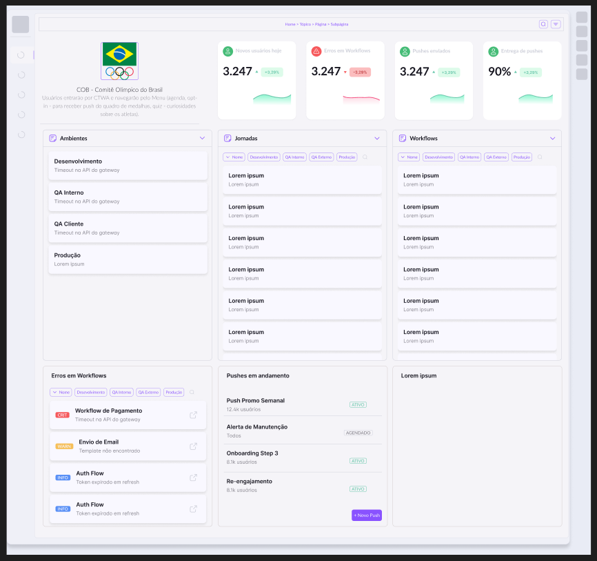
Cada agente tem sua própria home: novos usuários, erros em workflows e taxa de entrega de push logo no topo, com atalho rápido pras colunas de Ambientes, Jornadas e Workflows.
Embaixo, os erros ativos e os pushes em andamento já aparecem destacados — sem precisar abrir nada pra saber se está tudo rodando bem.
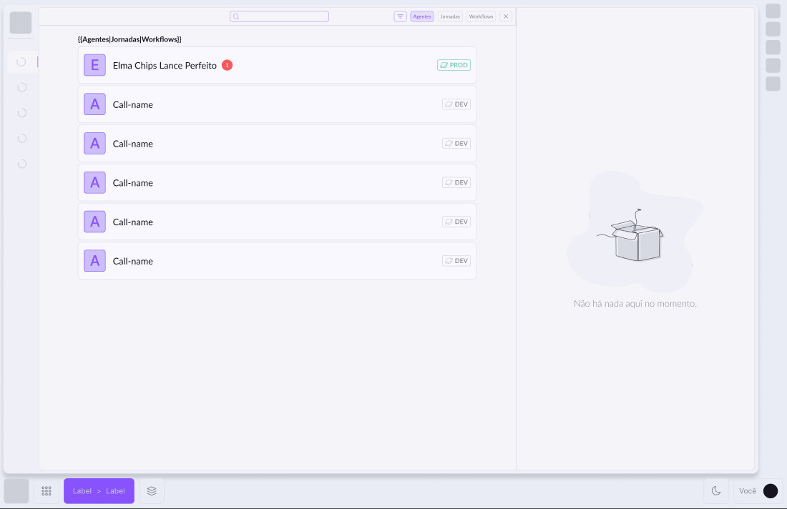
A tela inicial já deixa claro que existe uma biblioteca pra consultar antes de qualquer coisa: busca no topo, filtro por tipo de asset (Agentes, Jornadas, Workflows) e uma lista com nome e badge de ambiente de cada item. O painel à direita só se preenche quando algo é selecionado.
Esse é o comportamento que reduz duplicação: antes de desenhar um workflow novo, a pessoa vê rápido se já existe algo parecido — e em qual ambiente está.
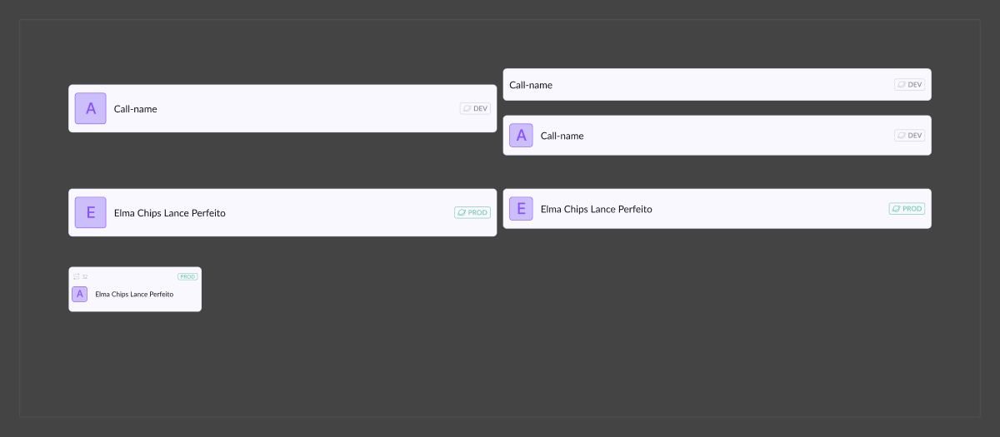
O mesmo cartão de asset se adapta a diferentes densidades — com avatar grande ou compacto, com ou sem badge de ambiente — pra funcionar tanto numa lista cheia quanto num espaço menor de destaque.
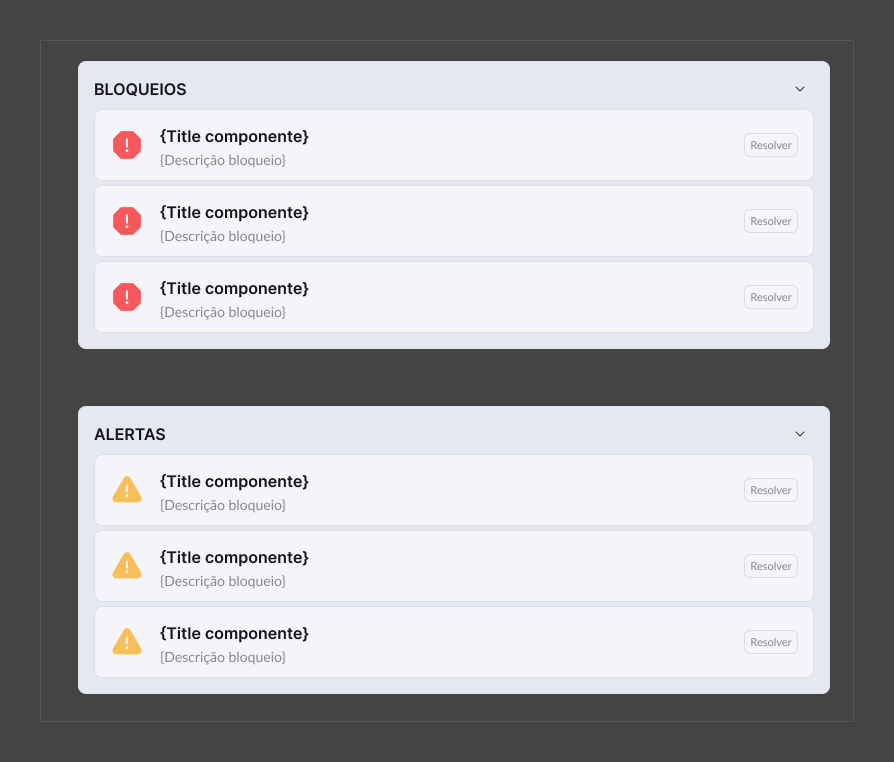
Vermelho sempre impede a publicação; amarelo só avisa. Mesmo sem ler o texto, a cor já diz o que precisa de ação imediata e o que é só um aviso pra se atentar.
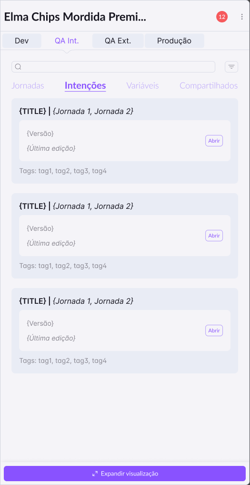
Jornadas, Workflows, Intenções e Variáveis dividem a mesma estrutura de cartão dentro do painel lateral — menos decisão de design nova a cada tipo, mais previsibilidade pra quem usa.
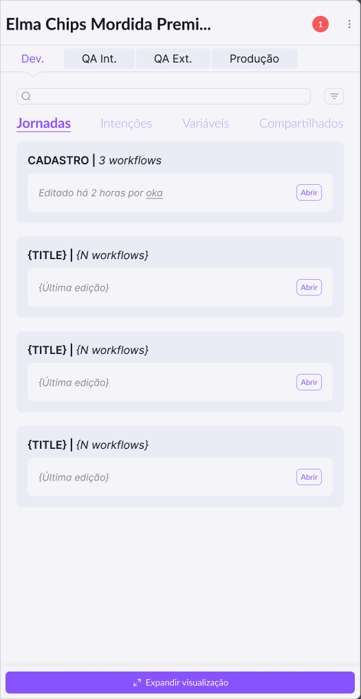
Cada jornada mostra quantos workflows ela reúne — como "Cadastro" com 3 workflows — e organiza o painel por tema em vez de uma lista plana de nomes técnicos.
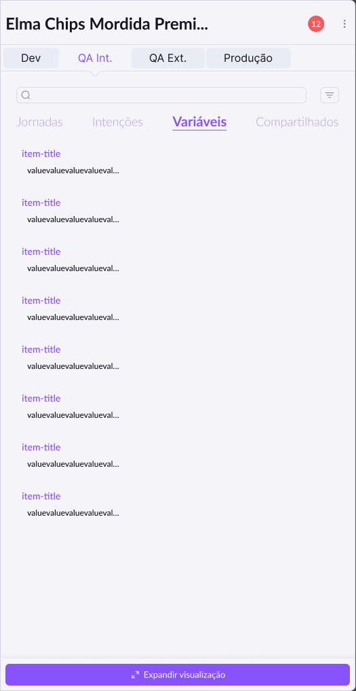
Cada variável aparece como título e valor, dentro do mesmo cartão usado pelos outros tipos de asset — dá pra escanear rápido sem aprender um formato novo.
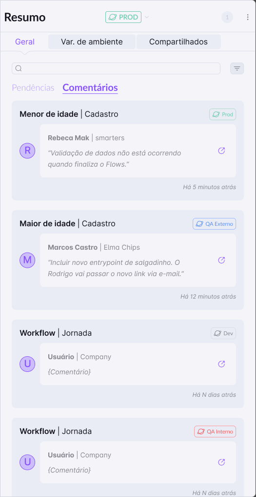
Cada comentário mostra quem escreveu, de qual empresa, em qual ambiente e há quanto tempo — direto no workflow ou jornada a que ele se refere, sem precisar procurar contexto em outro lugar.
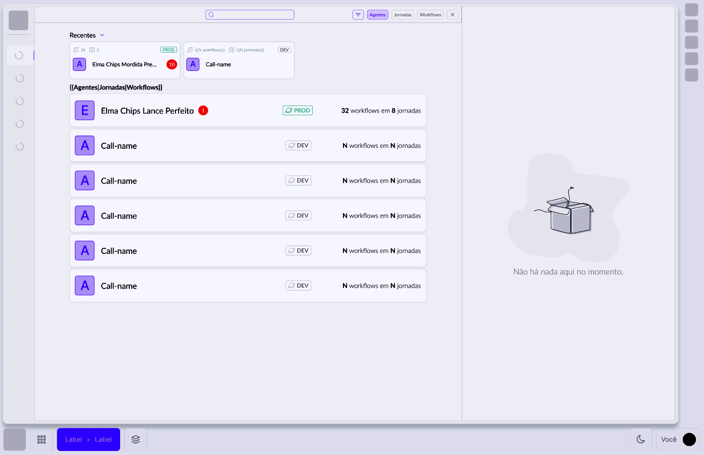
O botão "Expandir visualização" leva pra uma página cheia, com os mesmos cartões de Jornadas, Workflows, Intenções e Variáveis — só que com mais espaço, os itens recentes em destaque e um resumo de quantos workflows e jornadas aquele agente tem.
É a mesma informação do painel lateral, só que pensada pra quando a tarefa pede mais espaço — comparar várias jornadas lado a lado, por exemplo — em vez de criar uma tela completamente nova pra isso.
Clique em cada decisão pra ver mais
Dividimos a publicação em Destino (pra qual ambiente a versão vai), Pendências (o que falta resolver antes) e Rollout (como a mudança chega até quem usa) — três decisões separadas em vez de um único botão "publicar", pra cada etapa poder dar o contexto certo na hora certa.
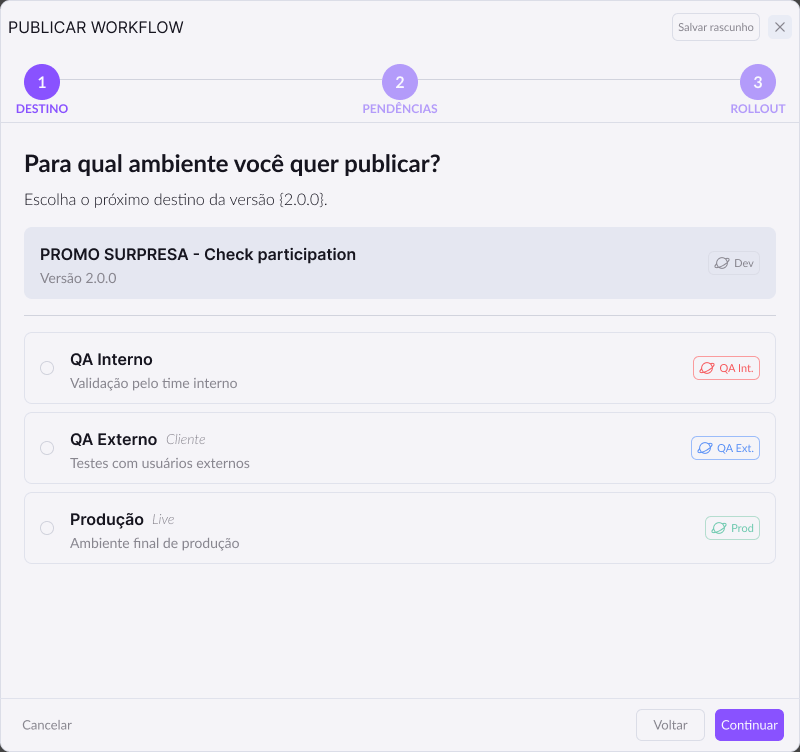
Passo 1 do assistente de publicação, direto do protótipo no Figma — escolha do ambiente de destino.
Bloqueios realmente impedem a publicação até serem resolvidos; alertas só avisam, sem travar o botão de continuar. Misturar os dois numa lista só faria um aviso cosmético pesar tanto quanto algo que vai quebrar o fluxo em produção.
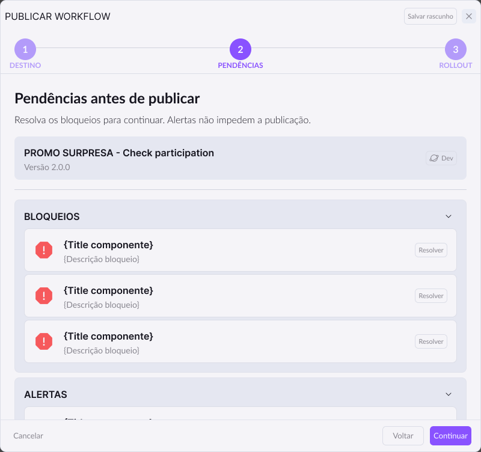
Passo 2 do assistente de publicação, direto do protótipo no Figma — bloqueios e alertas antes de liberar o botão de continuar.
Publicar em QA Externo ou Produção passa a depender da aprovação de uma pessoa autorizada — o rollout mostra quem precisa aprovar e dá um atalho pra mandar mensagem direto pra ela, sem sair do fluxo de publicação.
Além de publicar pra todas as sessões de uma vez, a pessoa pode agendar o rollout pra um horário específico — pensado pra mudanças ligadas a uma campanha ou evento com data de início já definida.
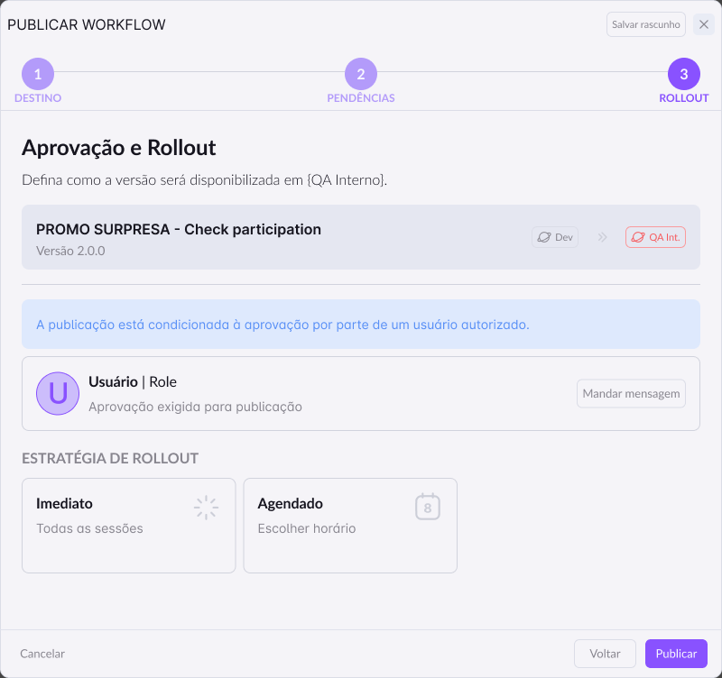
Passo 3 do assistente de publicação, direto do protótipo no Figma — aprovação e escolha da estratégia de rollout.
Além de aparecerem no passo 2 do assistente, as pendências de um ambiente ficam disponíveis num painel próprio, filtrável por nome e tipo — pra quem quer revisar o que falta resolver sem precisar iniciar uma publicação.
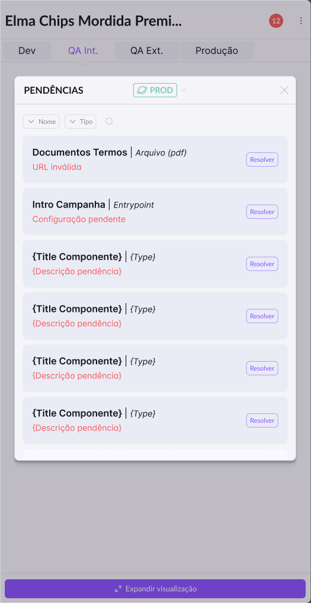
Painel de Pendências como tela própria, direto do protótipo no Figma — mesmo componente usado dentro do assistente de publicação.
Um workflow compartilhado mostra de onde veio — qual agente é a origem — e em que nível foi liberado: Agente, Company, Organization ou Global. Isso deixa claro quem pode reusar o quê, em vez de todo mundo enxergar tudo de todo mundo por padrão.
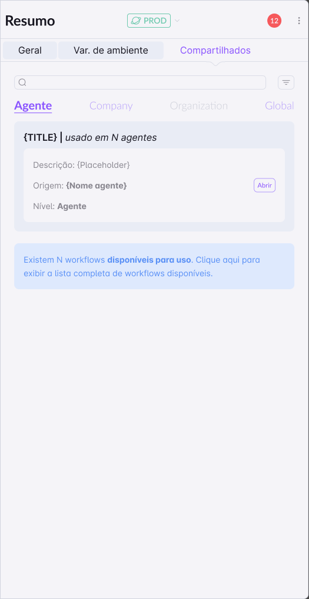
Aba Compartilhados, direto do protótipo no Figma — escopo de reuso em quatro níveis, do agente específico até a organização inteira.
Automações de WhatsApp falam direto com quem usa o produto — um erro em produção vira experiência ruim na hora. Os ambientes intermediários existem pra pegar esse tipo de problema antes, com o menor custo possível de correção.
A regra geral é: se o problema impede o fluxo de funcionar (uma integração quebrada, por exemplo), é bloqueio. Se é algo que vale revisar mas não quebra nada sozinho, é alerta. Essa distinção foi definida junto com o time técnico.
Muita automação está ligada a uma campanha com data de início certa — publicar cedo demais ou esquecer de publicar na hora certa são dois jeitos de dar errado. Agendar tira essa responsabilidade de "lembrar manualmente" de cima de alguém.
Nem todo workflow deveria estar disponível pra empresa inteira assim que é criado. Os quatro níveis — Agente, Company, Organization, Global — deixam quem criou decidir o alcance, em vez de abrir tudo por padrão ou esconder tudo por padrão.
Clique nos cards pra virar e ver.
O Workflow Builder centralizou a descoberta de assets de automação que antes estavam espalhados, e deu uma rede de segurança — bloqueios, alertas e aprovação — pro momento mais sensível do processo: o clique em publicar numa automação que fala direto com quem usa o produto.
Resultado descrito de forma qualitativa, sem métricas fechadas de antes/depois.